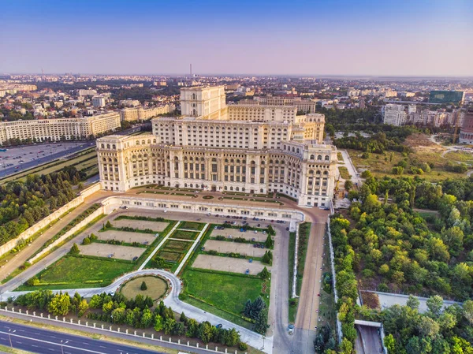

Коротка характеристика
Бухарест — це столиця та найбільше місто Румунії, відоме своєю еклектичною архітектурою.
Чому я обрала це місто?
Тут був неймовірний концерт, який залишив у мене найкращі спогади на все життя!
Цікаві факти та визначні місця
- Палац Парламенту: Найважча будівля у світі.
- Старе місто (Lipscani): Серце нічного життя.
Моя особиста оцінка: 10/10
Додаткова інформація: Вікіпедія: Бухарест